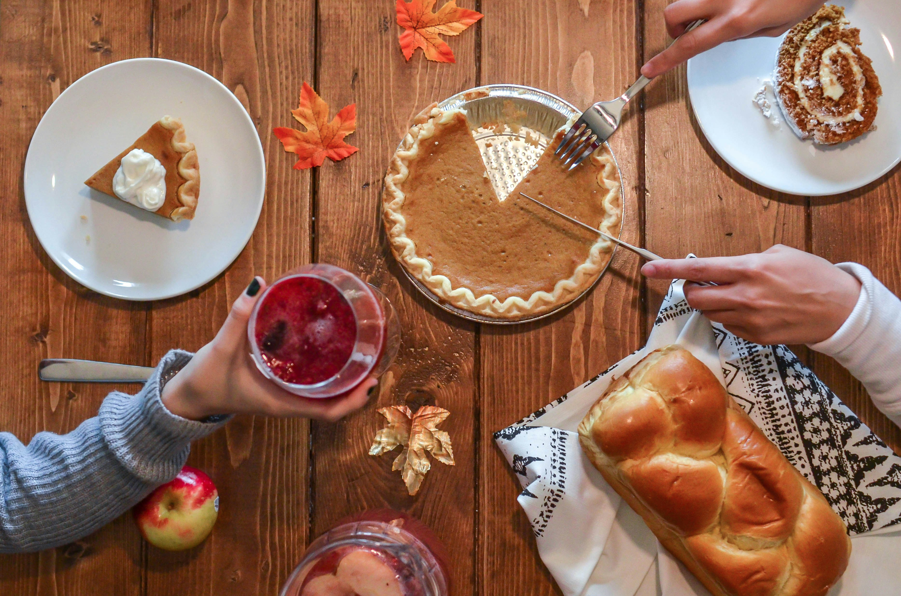
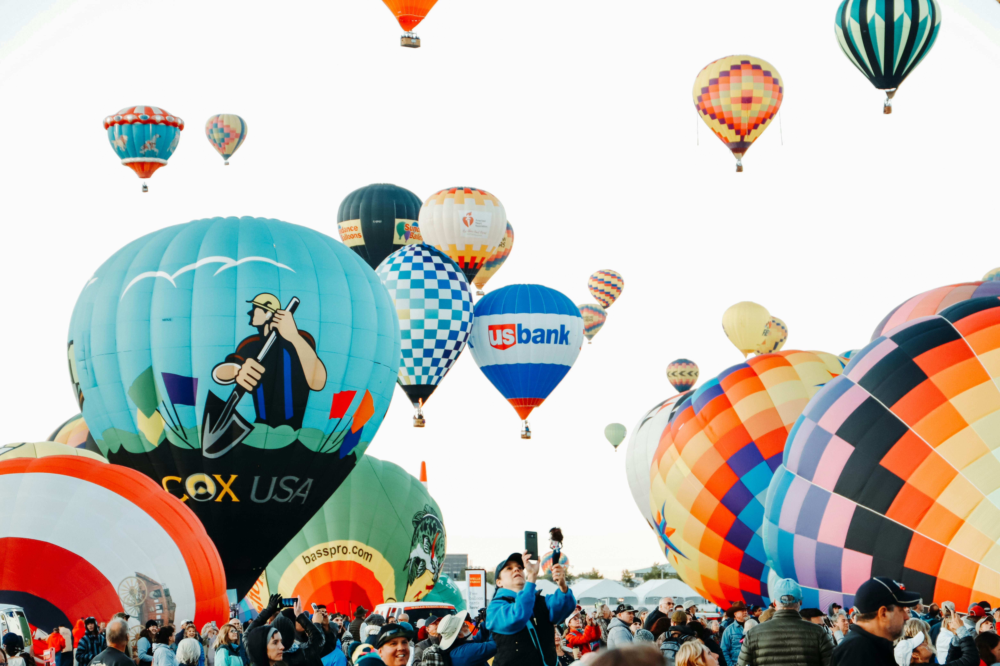

Rhythms of Joy and Tradition
Experience the USA's lively festivities:

Thanksgiving: Held on the fourth Thursday of November, this holiday embodies gratitude and family bonds, often celebrated with feasts featuring turkey, stuffing, and pumpkin pie.

Albuquerque International Balloon Fiesta: Held in New Mexico, it features a stunning display of hot air balloons filling the sky, drawing visitors from around the globe.

Coachella Valley Music and Arts Festival: Held annually in California, this iconic festival features performances by global music stars and showcases innovative art installations.